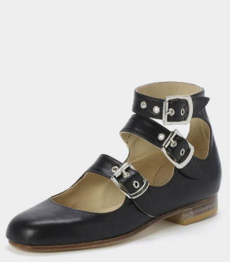
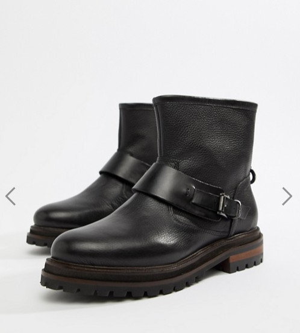
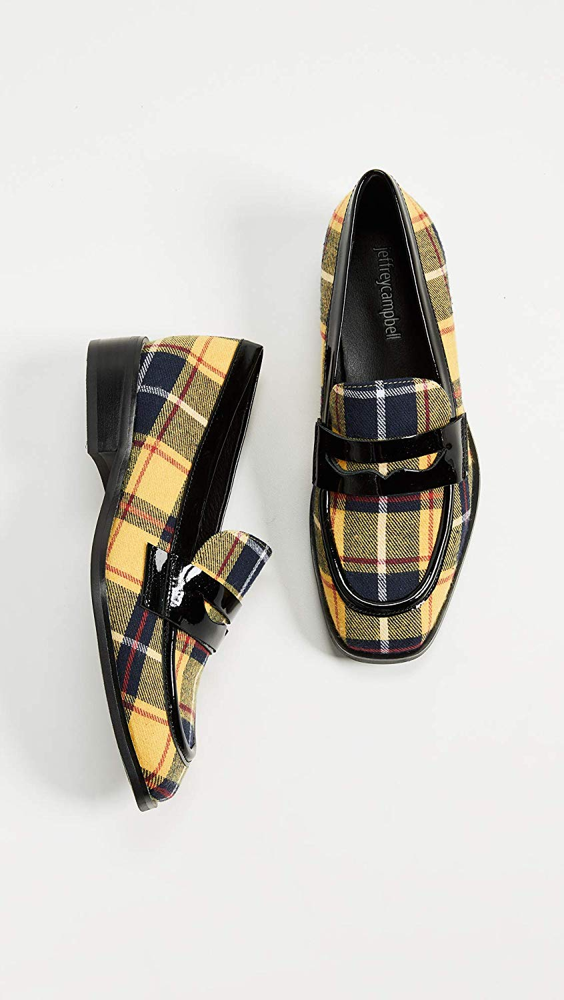
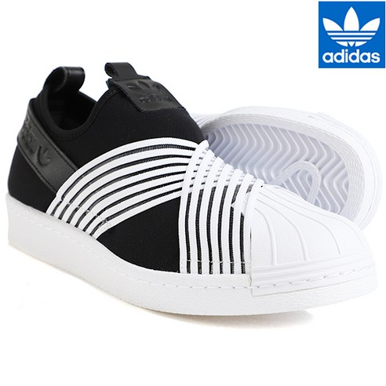

최근에 구매한 슈즈기록입니다.
작년에 몇켤레나 샀나 궁금해서 기록해놓은것도 있는데
생각보다 얼마 안 샀더라구용 ㅋㅋ
근 한달동안 4켤레를 샀는데 아직도 위시리스트가 많이 남아있습니다..........OTL
발은 두갠데에에;;;

영국에서 요 비비안웨스트우드 쓰리스트랩을 사오고

알도 에서 구입한 바이커 부츠를 겨울마다 넘 잘신어서
길이가 살짝 짧은걸로 hudson 제품 구입 :)
이걸 본 엄마님께서는
........똑같은거 또사? 라고 하셨습니다.
아냐!! 길이가 다르다고!!!

Jeffrey Campbell HORNSBY PLAID LOAFERS
샵밥에서 세일하길래 충동구매한 로퍼
나의 패숑취향을 맨날 까던 동생곰도 귀엽다고 해준 신발인데 ㅋㅋ
샵밥에서는 uk5 가 us7 로 되어있길래 주문했건만
미묘하게 작아서 7.5 다시 주문
반품시킬려고 봤더니 세일가 + 배송비 해서 80딸라 조금 못미치게 주고 산 신발이
리턴 DHL 비용 40딸라.....................OTL 크흑흑
게다가 us7.5 사이즈도 미묘하게 발이 불편합니다 ;ㅂ;
뭐야 예쁘면 다야;; 신발이랑 싸우는중;;

그리고 가장 최근에 구매한 아디다스 슬립온
무진장 편하다는 말에 낚여 구매했는데
진짜 편해요!! 쿠션 폭신폭신하고 신고벗기도 편하고 추천입니다 :D :D
일케 4켤레를 지르고 동생곰과의 대화
나: 신발을 많이샀는데 신발이 사고싶다
동생곰: 난 아직 포장도 안뜯은게 있어...... (울집에서 슈즈 젤 많음 ㅋㅋㅋ)
ㅋㅋㅋㅋㅋㅋㅋㅋㅋㅋㅋㅋ 역쉬 패밀리(?) 라는 이상한 결론을 내리고 또다시 위시리스트를 늘려가고 있습니다 ^^;;;;